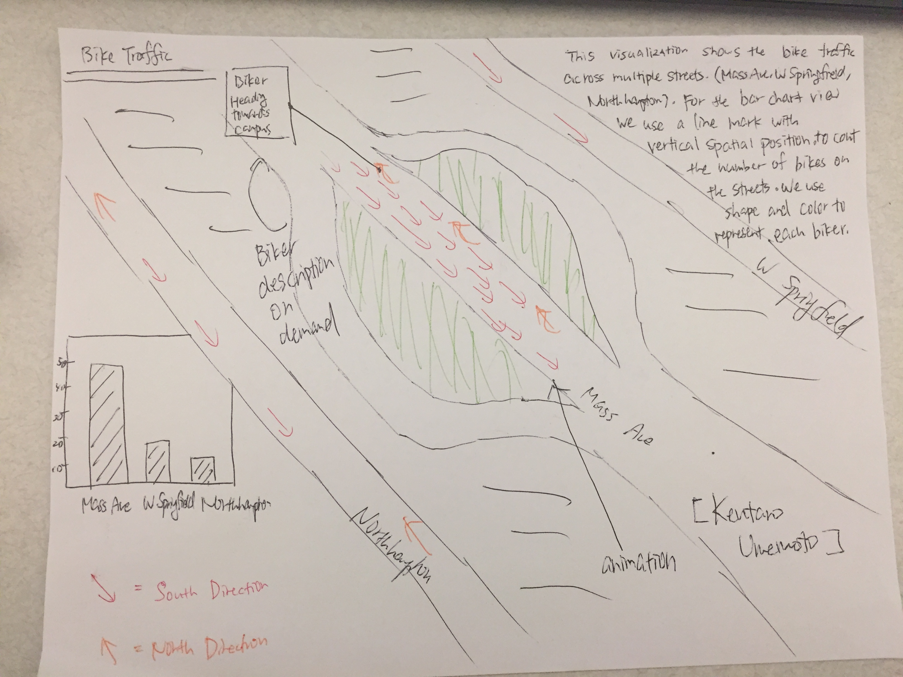

Jillian Arkin-Burns, Ken Umemoto, Jared Kahn
Service-Learning Course Project as part of DS 4200: Information Presentation and Visualization , taught by Prof. Cody Dunne , Data Visualization @ Khoury , Northeastern University .
This project was jointly created with the Chester Square Neighborhood Association. The goal of the neighborhood is to utilize visualizations to illustrate the current bike safety in the neighborhood. Massachusetts Avenue is a route taken by a great amount of commuters and residents often times feel unsafe using their bikes. Due to the high car traffic in the area accidents between motor vehicles and bikes frequently occur thus becoming a serious issue.
To meet the neighborhood's goals as a team we focused on bike lanes. When we went down to Massachusetts Avenue and observed Chester Square we noticed that cars and construction trucks were hindering the bike lanes and it was clear that the safety of bikers in the bike lanes were not optimal.
In order to effectively identify which parts in the Chester Square Neighborhood is in need of additional infrastructure, we examined the different types of bike lanes across various neighborhoods in the city of Boston and how bike accidents have a correlation with car traffic and bike lane types.
The intent of the visualizations below is to be used as a reference when the neighborhood requests policy changes or additional infrastructure for bike lanes. We hope that our visualization leads to improvement in bike safety in the neighborhood in the future.
We decided to use a stacked bar graph, because it was the best method for displaying bike lane type distribution so that comparing different streets is as simple as possible. Using
We decided to use line graph with a line for each of motor vehicle and bike traffic was the best way to discover correlations between each other, as well as comparisons between streets. The low-opacity average line that remains visible while the view is filtered can help
For our third graph displaying bike crashes on different streets, we chose to use a bar graph for ease of comparison between different streets as well as with the full-height bar graph.
We used 3 different sources of data to construct this visualization; they are: a geographical map of bike lanes in Boston, a spreadsheet of vehicle counts for bikes and motor vehicles at specific locations around Boston, and a list of bicycle crashes in Boston.
To construct our final dataset, we calculated the portions of each street we examined that was covered with each type of bike lane, and added the bike lane type to the crash data for those streets.
By the end, we had made significant changes to our original design. We quickly moved away from the idea of representing the information using a map, since we wanted to paint a better picture of bike safety for the greater Boston area. As a group, we decided that the map was not crucial in describing bike safety in Boston, since the geographical location wasn’t nearly as important as the bike lane type, number of crashes, and traffic levels. We then made some smaller design choices and tweaks. For instance, we decided not to allow the user to filter traffic by bike lane type, since we only had that information for a very limited number of streets. This was similar to many of our decisions, as it was based on what we had available to us. Our data definitely limited our options in terms of the details of our visualization, since we could only present what we could find. Lastly, we also decided to include data for a greater number and portion of streets, instead of sticking to the Chester Square area, since we knew people biking in that area would likely be biking in the surrounding area as well. We also thought it was important to compare different streets around Boston, thinking comparison in safety levels could be significant regardless of the distance from Chester Square.
Our visualization allows the user to compare car and bike traffic to accidents and bike lane types for the Boston area. This discussion is imperative in regards to the improvement of bike safety in Chester Square and greater Boston area. From the data available to us, we faced high level of difficulty in drawing correlations between bike lane types and the number of accidents on certain streets. The majority of the number of accidents for certain bike lane type on a certain street made sense in terms of the proportion of the bike lane type on that street. However, we were able to find streets where the number of accidents was disproportionate to the level of traffic. For example, Massachusetts Ave had significantly more accidents than any other street, which on first look, makes sense as its traffic level is much higher than the average. After comparing to the other streets, however, it is apparent that Beacon Street has a similar traffic level with less than half the number of accidents. From our data alone, it is difficult to conclude that Mass Ave has a bike safety problem, but it demonstrates a potential problem and calls for further investigation. In the future, it would be helpful to have more precise data sets, especially for car and bike traffic, since that would assist greatly in the search for a correlation. Better data would allow for definitive conclusions to be drawn about bike safety on the different streets, rather than just displaying a more general picture and highlighting some potential danger areas. Lastly, it would also be helpful to do a more in-depth study of the different bike lane types to determine why certain types may be better than others. For people attempting to install safer bike lanes, it would be helpful to know what bikers like better and why certain lanes will keep them safer.